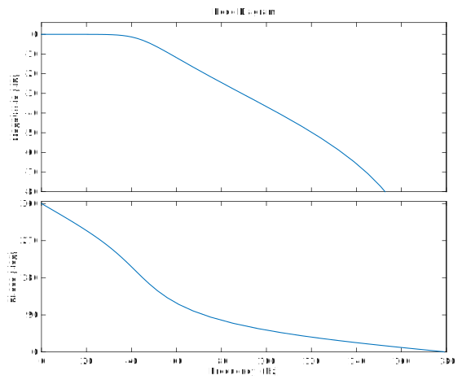
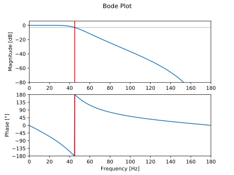

Discretization of a Fourth-Order Butterworth Filter
Pieter PThis is an example on how to design a filter in the analog domain, and then use the bilinear transform to transform it to the digital domain, while preserving the cut-off frequency.
We'll be using formulas derived on the Bilinear Transform and Butterworth Filters pages.
Design criteria
In this example, we'll design a digital fourth order Butterworth low-pass filter, with a sample frequency of and a cut-off frequency of .
Frequency Pre-Warping
As discussed in the page on the Bilinear Transform, we have to apply pre-warping to the cut-off frequency before designing a filter. If we don't the cut-off frequency will shift to an incorrect frequency when we discretize the filter.
First, let's calculate the normalized digital frequency , using the cut-off frequency and the sample frequency : The Nyquist-Shannon sampling theorem tells us that we can never sample frequencies higher than without losing information. This also means that the cut-off frequency can never be higher than half of the sample frequency. Or in other words, all normalized frequencies will be in the interval .
Next, we'll use the pre-warping formula we derived in the page on the Bilinear Transform, in order to calculate the analog design frequency : Note that this frequency is relatively close to , but it is not the same. The higher the cut-off frequency (relative to the sample frequency), the larger the error between and .
Designing the Butterworth filter in the Analog Domain
Now that we know the pre-warped analog cut-off frequency, we can start designing the analog filter.
We'll use the formula for the Butterworth low-pass filter derived in the page on Butterworth Filters:
Defining these constants will make the calculations much easier:
Discretizing the Analog Filter
We can now just apply the Bilinear Transform to the analog transfer function, by substituting .
Therefore:
Again, we'll introduce a constant to simplify the expression:
What follows is just rearranging the expression of from Equation , using the substitution of Equation .
Finally, we end up with an expression for the transfer function, using Equation , and we can determine the coefficients using the constants
defined in Equations , & .
Frequency response & Pole-Zero Map
We can check the filter's frequency response to make sure that we didn't make any mistakes.
As mentioned in other pages, the frequency response of a digital system can be a obtained by evaluating the
transfer function along the unit circle (). We'll plot the magnitude in decibels.
We can also plot the phase angle of the response:

 You can see that the corner frequency lies around . We can check this mathematically:
You can see that the corner frequency lies around . We can check this mathematically:
MATLAB
If you have to design many different filters, you don't want to calculate them all by hand. Luckily, MATLAB and GNU Octave come with a command to calculate the coefficients of Butterworth filters.
Note that MATLAB expects the normalized frequency as a number from 0 to 1, so we have to divide by before passing it to thef_s = 360; % Sample frequency in Hzf_c = 45; % Cut-off frequency in Hzorder = 4; % Order of the butterworth filteromega_c = 2 * pi * f_c; % Cut-off angular frequencyomega_c_d = omega_c / f_s; % Normalized cut-off frequency (digital)[b, a] = butter(order, omega_c_d / pi); % Design the Butterworth filterdisp("a = "); disp(a); % Print the coefficientsdisp("b = "); disp(b);H = tf(b, a, 1 / f_s); % Create a transfer functionbode(H); % Show the Bode plot
butter function.
A similar function is available in the SciPy signal package:
butter.
from scipy.signal import butter, freqzimport matplotlib.pyplot as pltfrom math import piimport numpy as npf_s = 360 # Sample frequency in Hzf_c = 45 # Cut-off frequency in Hzorder = 4 # Order of the butterworth filteromega_c = 2 * pi * f_c # Cut-off angular frequencyomega_c_d = omega_c / f_s # Normalized cut-off frequency (digital)b, a = butter(order, omega_c_d / pi) # Design the Butterworth filterprint("a =", a) # Print the coefficientsprint("b =", b)w, h = freqz(b, a) # Calculate the frequency responsew *= f_s / (2 * pi) # Convert from rad/sample to Hzplt.subplot(2, 1, 1) # Plot the amplitude responseplt.suptitle('Bode Plot')plt.plot(w, 20 * np.log10(abs(h))) # Convert to dBplt.ylabel('Magnitude [dB]')plt.xlim(0, f_s / 2)plt.ylim(-80, 6)plt.axvline(f_c, color='red')plt.axhline(-3, linewidth=0.8, color='black', linestyle=':')plt.subplot(2, 1, 2) # Plot the phase responseplt.plot(w, 180 * np.angle(h) / pi) # Convert argument to degreesplt.xlabel('Frequency [Hz]')plt.ylabel('Phase [°]')plt.xlim(0, f_s / 2)plt.ylim(-180, 180)plt.yticks([-180, -135, -90, -45, 0, 45, 90, 135, 180])plt.axvline(f_c, color='red')plt.show()